The VAT Monitoring System (VMS) is an initiative by the Government of Fiji that requires organisations to calculate the VAT on sales transactions correctly by submitting sales to a central electronic system. This process is called "Fiscalisation".
There are two ways that VMS can be implemented:
V-SDC: Which sends each sales transaction over the internet to a central system;
E-SDC: Which sends each transaction to a local device so doesn't require a live internet connection. The device can be a network device, or plug into a computer's serial port.
MoneyWorks supports both V-SDC and the networked version of E-SDC.
As of MoneyWorks 8.2, VMS will be automatically loaded for Fijian users of MoneyWorks, but not enabled (the latter can only be done when you have done the necessary setup). VMS is not available to users outside of Fiji.
Before you can configure MoneyWorks for VMS, you need to arrange with FRCS which type you will be using (possibly both), and get and install the necessary security certificates for V-SDC, or hardware for E-SDC. Note that any supplied security certificates will need to be installed on each machine that is running MoneyWorks.
Having got these preliminaries sorted, you will be ready to set up VMS in MoneyWorks.
To configure VMS in MoneyWorks:
The VMS Settings window will open:
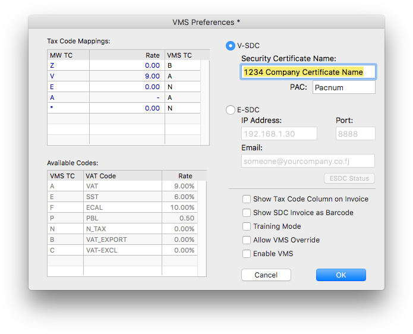
The Tax Code Mappings list displays the VAT codes used in your MoneyWorks file. VMS requires standardised codes, which are displayed in the list underneath. You need to enter the corresponding VMS code for each of your codes (this is done in the right hand column). For example the tax code "Z" is used in MoneyWorks for zero rated exports, and the corresponding VMS code is "B". You can enter more than one VMS code per MoneyWorks tax code, provided they are separated by commas and there are no spaces.
Security Certificate Name: The certificate (along with instructions on how to install it) is supplied by FRCS.
PAC: A code supplied by FRCS.
IP Address of E-SDC device on your local network (e.g. 192.168.1.30);
Port Number of E-SDC device (default is 8888)
Email address of administrator (optional). Whenever MoneyWorks detects that an E-SDC audit is required an email will be prepared to this address.
Depending on your email settings in MoneyWorks Preferences, this will either open in your email client, or (if using SMTP) be sent silently.
If you are using both V-SDC and E-SDC, leave the radio button set to your preferred default
If you need to change methods later, just change the radio button setting.
Other options:
Show Tax Code Column on Invoice: This will display the VMS tax code (A, B etc) in a separate column on the supplied VMS compliant tax invoice form.
Show SDC Invoice as Barcode: The SDC Invoice number is a special code returned by VMS which is required to printed on each invoice. If this option is set, it will also also print as a barcode so can be easily scanned in (if issuing a refund, you need to reference this number).
Training Mode: Puts the MoneyWorks VMS system into a special training mode.
Invoices submitted to VMS will be marked as "Training" (i.e. not real). As these are real posted transactions in MoneyWorks, it is important that you reverse these out before the training session is complete (you don't want to do it after, as VMS will treat the reversals as real transactions).
Allow VMS Override: Allows users to bypass VMS processing on selected transactions. You would only enable this if you are entering transactions from another system, such as a stand alone POS, which has already fiscalised the transaction. Transactions that are bypassed will be marked as such (with the user initials) for audit purposes. Note that the setting and
resetting of this option will be recorded immutably in MoneyWorks for audit purposes.
Enable VMS: This turns the VMS system on permanently (it cannot be turned off again, but you will get a couple of warnings about this). Do not turn this on until you are ready with VMS.
The following are the main changes in MoneyWorks operations imposed by VMS.
This is so that MoneyWorks can modify the VAT if it needs to be altered by the VMS system. To show the VAT column, choose Edit>Document Preferences and turn on the Show Tax Column option. When VMS is enabled you will not be able to turn this off.
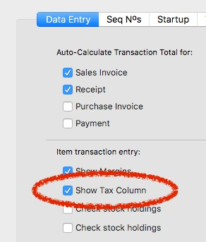
VMS requires the TIN of the cashier who made the transaction. For each login you will need to make a corresponding name record (this can be of type Other) with the same code as the cashier's initials and their TIN in the VAT Reg No field.
Thus if Annabell has login initials "AA", her corresponding name record would be:
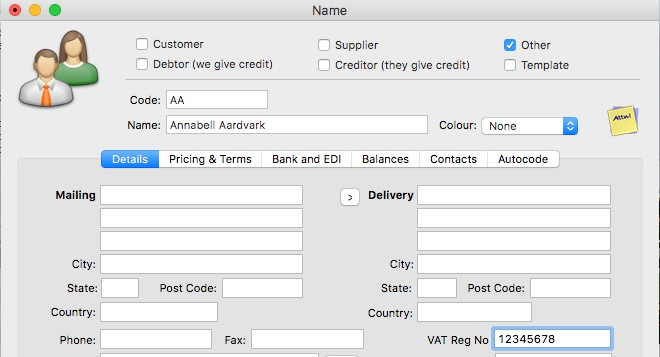
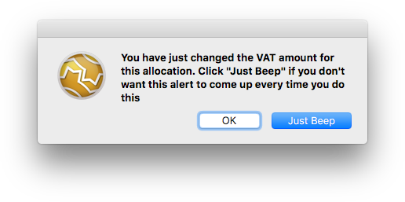
You can only post a Sales Invoice or Sales Receipt from an open transaction window (by clicking the Post icon, then OK or Next). You can no longer batch post from the transaction list if the batch contains a sales invoice or receipt. Posting a batch of transactions that does not contain a sales transaction is not affected.
When a sales transaction is posted in this way there will be a
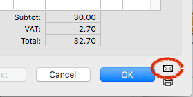
Use the Post icon in the transaction window to post sales transactions.
This is a standard MoneyWorks feature to alert you to possible inadvertent changes in the VAT amount. To avoid the warning re-appearing in the current session, click Just Beep.
Each line on a sales transaction must have the same sign (i.e. all lines are either positive, for a sale, or negative, for a refund/credit note). If you attempt to post a sales transaction with mixed signs the following will be displayed:
slight delay while its details are sent to VMS and its VAT is recalculated if necessary based on the gross value of each line. Note that if the VAT is different this will be replaced in the open transaction, and you will get the following warning:
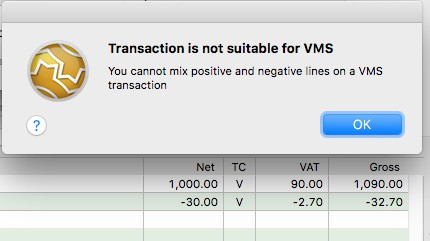
When you fiscalise a refund (a negative Receipt) or a credit note (a negative Sales Invoice) you are required to tie it back to the original transaction. A list of previous fiscalised transactions for that customer will be displayed:
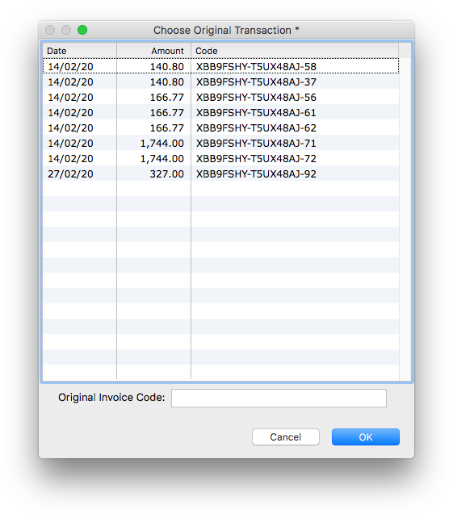
Double click the original from the list, or key/scan in the Invoice-ID printed on the original. If the original predates fiscalisation, leave the field blank. If you submit an unrecognised Invoice-ID the request will be rejected by VMS with the following message: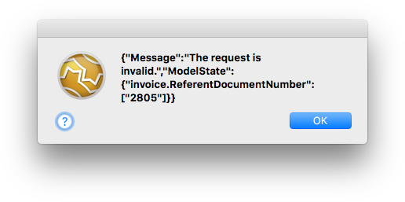
You can no longer receive a deposit as part of processing a sales order (using Deposit on Order) or invoice (setting the Deposit checkbox). This is in part because the Deposit transaction itself needs to be fiscalised, but also deposits on orders will generate a negative line, which is no longer permissable.
Attempting to use the deposit feature will result in an alert:
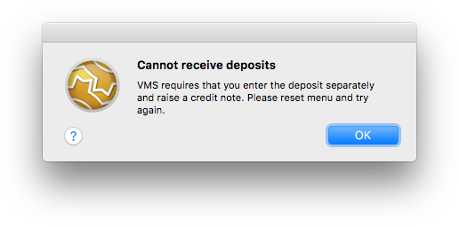
Receiving Deposits on Orders: To lodge a deposit on a sales order you will need to create a separate receipt for the customer for the deposit amount and an associated credit note as described below. Unfortunately these cannot be linked to the original order (but you could put a sticky note on the order to remind you).
Raise a separate invoice for the customer for the deposit (it will presumably be coded to some Deposits in Advance liability account). FRCS recommend that you label this something along the lines of "40% of an Item".
Post the invoice (which will fiscalise it)
Receipt the deposit amount against the invoice
Duplicate the invoice using the Duplicate toolbar button, then reverse it using Reverse toolbar button.
Post the invoice, which will fiscalise it. As the invoice is a "refund", you will need to identify the original transaction (see Refunds and Credit Notes), so choose it from the list of candidates displayed.
This has the effect of leaving the customer with a credit, which can be contra-ed off their final invoice payment.
Receiving Deposits on Invoices: For posted sales invoices, you can just do a normal receipt against the invoice. If the invoice is not posted you need to follow the steps for Deposits on Orders above.
Just when you think it couldn't get worse, you can no longer use the Cancel command to cancel a posted sales transaction because the cancelling transaction itself has to be fiscalised (you can still use it to cancel a receipt against invoice).
Instead of Cancel, use the Duplicate command to duplicate the original posted (and hence fiscalised) transaction, click the Reverse toolbar icon, then post the transaction, which will cause it to be fiscalised as a refund transaction. Then
contra this negative invoice against the original.
You can fiscalise an unposted sales transaction (i.e. a sales order, or unposted invoice/receipt) if needed. To do this open the transaction and click the VMS ProForma toolbar icon. The details will be sent to the VMS system and the VAT on the transaction adjusted if necessary.
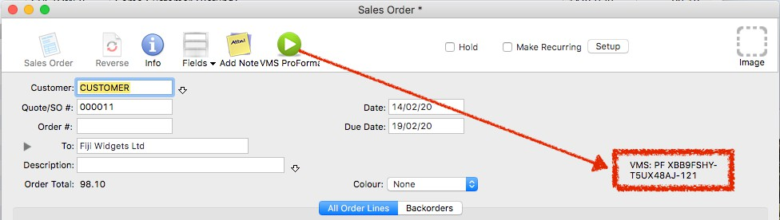
When a transaction has been fiscalised, the Invoice-ID returned by VMS is displayed on the transaction, as shown above.
Rolling back you file is no longer permitted. This is because it may contains fiscalised transactions, and it is not apparent what the consequences would be if you re-fiscalised them.
E-SDC differs from V-SDC in that the fiscalisation is done on a device located on your premises, and not over the internet to central server. Whenever you start MoneyWorks and fiscalise a transaction, you will need to enter the E-SDC devices PIN number:
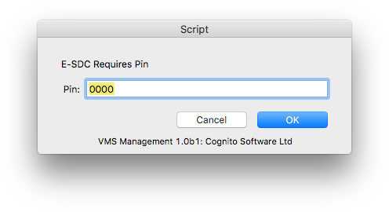
MoneyWorks will also check the device's status at this point and if there are potential issues will display a warning:
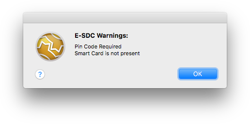
If an audit is required and there is a valid email address in the E-SDC settings, and warning email will be prepared.
If the Allow VMS Override VMS Setting is on, it is possible to bypass VMS processing for selected transactions. Only users with the "User Privilege 3" privilege turned on will be able to do this.
Important: You should only do this if you need to enter transactions that have already been fiscalised in a different system, such as a stand alone POS. Such transactions when printed will show as This is not a fiscal receipt.
To bypass a transaction:
You might need to widen the transaction slightly if this is not visible the first time you try to use it.
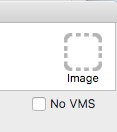
A warning will be displayed.
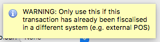
The transaction will be posted without sending through the VMS system.
When the transaction is re-opened it will display the following, instead of the Invoice ID.
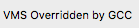
Note that you cannot set the No VMS override and save the transaction for later posting. You must set the override and immediately post the transaction.
VMS requires that certain information be included on a printed sales docket/ invoice. Two invoice layouts are provided (these need to be installed into MoneyWorks Custom Plug-ins/Forms folder, and if using Datacentre uploaded to the server).
VMS Fiji Invoice: This will print both invoices that either "By Item" or "By Account", and is based on the existing forms in MoneyWorks.
VMS Text Invoice: This will print the "journal" received from the VMS system, part of which is shown below:
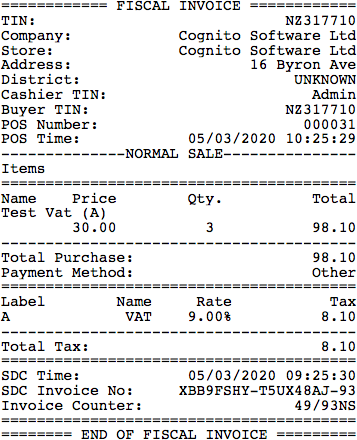
Also provided is a form "VMS Invoice Elements". This contains the necessary elements, such as the QR code, that need to be added to any customised forms you might have. You can copy and paste the elements from this form onto your custom form using the MoneyWorks Forms Designer. Note that you might have to get your resultant form approved as being compliant by FRCS.
Sales tax is a consumer tax that is charged at the end of the supply chain. It is used in many US states, and also in some Canadian provinces.
If you are collecting Sales Tax, you will need to add the tax to any sales you make (except where the customer is exempt from sales tax). Although purchases may have sales tax added to them, you will not be able to reclaim these (instead the sales tax portion needs to be included into the purchase price, which MoneyWorks can do automatically for you).
When you first set up MoneyWorks, you therefore need to make sure that the tax rates in the tax table — see Tax Codes are set up for your location.
MoneyWorks comes pre-loaded with the sales tax rates for PST in Canada, but not for the myriad of possibilities in the US.
Sales tax on a transaction line is determined by the tax code on the line, and this in turn is normally determined by the settings in the general ledger (although this can be overridden for specific customers and suppliers). Thus your sales general ledger codes will normally all have a tax code on them to make them taxable — see Tax Code.
Although you pay sales tax on purchases, you have to include it in the cost of the item. In MoneyWorks, if there is a sales tax on a purchase/expense transaction, the sales tax portion will automatically be allocated to the general ledger code used on the line. It is therefore possible to have a sales tax code on purchase/ expense codes, which can dramatically streamline the entry of these transactions (because each line of the source docket is normally recorded net of tax, with the total tax given at the bottom).
The sales tax report is used to itemise and summarise your sales tax liability. You will run this at the end of each period for which you need to report on sales tax. To run the report:
The Sales Tax report settings will open
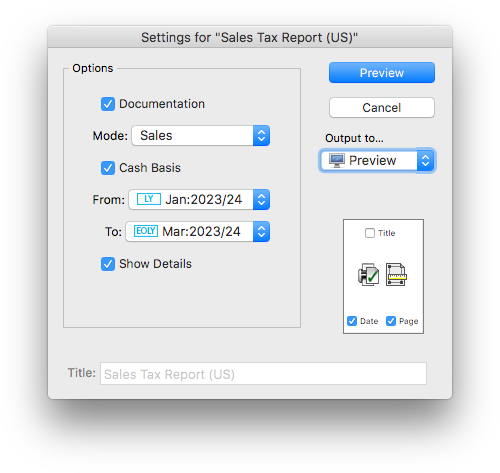
If Mode is set to Documentation, the report (when run) will produce a description of the output it would normally produce.
If you are reporting on just one period, these will be set to the same
Show Details: If this option is on, each transaction line will also be shown on the report. This will make the report longer, but it may be useful if you find that your sales tax figures don’t seem to make sense.
The report will list every posted Sales transaction (i.e. debtor invoice, and receipts that are not paying invoices) in the nominated reporting period, along with its sales tax. The report will also list any sales transactions from prior periods that were posted in the reporting period, allowing prior period adjustments to be automatically included.
At the end of the report, the total sales tax is broken down into its component parts (e.g. State and County).
Note: Transactions entered prior to MoneyWorks 5.2 are shown in blue (the sales tax handling was different in older versions). The sales tax on these cannot be broken down into its component parts, so the total is listed at the end of the report.
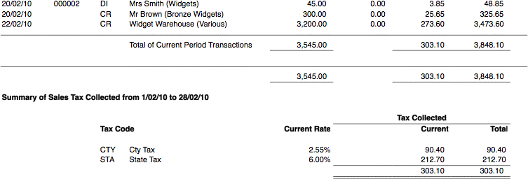
Individual sales are listed at the top of the report, and the total sales taxes collected are summarised at the bottam (by tax code).
The Sales Tax report has a Purchases mode. If set to this, the report will look at purchase transactions (i.e. creditor invoice and direct payments) that were made in nominated time period using versions of MoneyWorks prior to 5.2.
Sales tax on these transactions was not automatically “expensed”, and you needed to put through a journal at month end to adjust for this. The report will list the transactions, and the required journal.
Because the Sales Tax report only considers “Sales” transactions (i.e. Debtor Invoices and direct Receipts that bypass the Debtors system), it will not recognise refunds that you have put through as payments.
Refunds in MoneyWorks should always be done by applying a Return Refund to Debtor on a previously raised credit note (i.e. negative debtor invoice). Apart from ensuring this will be picked up correctly for Sales tax purposes, it will also ensure that any associated inventoried items on the sale are returned to stock at the correct valuation9. Refunds can also be achieved by using a negative Receipt (although counter-intuitive, this is a sales reversal, and the inventory and tax will be handled correctly).
Having determined your sales tax liability, you just need to pay it.
This will be a payment coded to the appropriate Tax Received accounts (you can have different control accounts for different component taxes if you wish). So to pay the tax in the above report, my transaction would be something like:
MoneyWorks has a built-in table of tax codes and rates. These tax codes are associated with Accounts or Names, and the corresponding rate is used to calculate the GST or sales tax whenever a transaction is entered. You can modify the standard codes (except *) if you wish, or add new codes for special situations (e.g. special rates for rest homes, out of state sales, beverage and accommodation taxes etc). The default tax codes are:
Default Codes (most countries, not USA)
| E |
|
0% |
|---|---|---|
| Z |
|
0% |
| A |
|
100% |
| V |
|
|
| G |
|
|
| * |
|
0% |
Additional Canada GST Codes
H Standard HST (rate varies by province) P PST (rate varies by province)
T GST + PST (rate varies)
Q QST 9.975%
Default Australian Codes
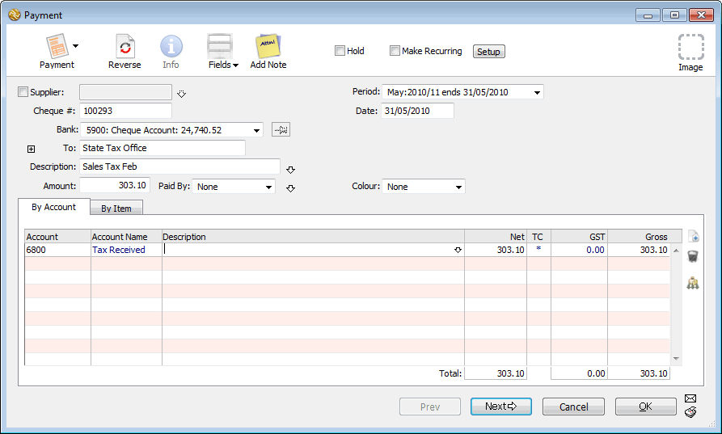
| G |
|
10% |
|---|---|---|
| I |
|
0% |
| C |
|
10% |
| F |
|
0% |
| X |
|
0% |
| W |
|
0% |
| P |
|
0% |
| U |
|
48.5% |
| Additional UK Codes | ||
| VR |
|
5% |
| EU |
|
0% |
Default Singapore Codes Note: Rates will increase to 8% on 1 Jan 2023 and 9% on 1 Jan 2024 |
||
| G |
|
7% |
| E |
|
0% |
| Z |
|
0% |
| A |
|
100% |
| IM |
|
7% |
| ME |
|
0% |
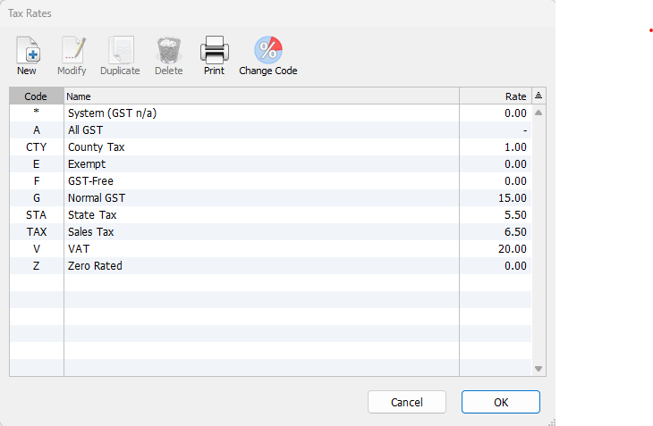
USA Sales Taxes
| BL |
|
7% |
|---|---|---|
| NR |
|
0% |
| OP |
|
0% |
| E33 |
|
7% |
| EN3 |
|
7% |
| RE |
|
7% |
| ESN |
|
0% |
| DS |
|
7% |
| OS |
|
0% |
| IGD |
|
7% |
| RCM |
|
0% |
| GPG |
|
0% |
| CAA |
|
100% |
| CAG |
|
7% |
| LVRC |
|
- |
| LVRC- |
|
0% |
| EMREM |
|
8% |
| LVRED |
|
8% |
| LVOWN |
|
8% |
STA State Tax
CIT City Tax
CTY County Tax
USE Use Tax
ZER Zero Tax
EXE Exempt Tax
TAX Combined Tax (STA+CTY+CIT)
Note: The "*" tax code is used for accounts that are outside the tax system (such as bank accounts). If you use it on other accounts you will not be able to override it when entering a transaction involving those accounts.
The Tax Rates table will be displayed:
Note: You can only modify tax codes if you are the only user on the system. If there is more than one user, the Modify button will show as View.
Note: As well as managing the taxes through the Tax Rate screen, you can also import taxes to create new ones or update existing rates (see Importing Tax Rates).
The Tax Code entry window will be displayed.
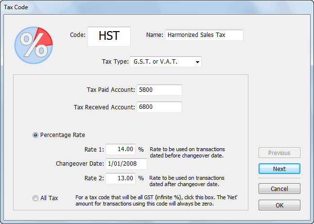
Note: If you have multi-currency enabled in MoneyWorks Gold/Datacentre, an additional Tax code is for different country option is available. Turn this on only if you are setting up this code for a different country. See Paying GST/ VAT in Multiple Countriesfor more information.
This can be up to five characters long, and must not be already in use.
Set the Tax Type
A tax can be either GST or VAT10, a Sales Tax, a Composite Tax (a combination of other taxes), or a Reversed Tax (where the supplier is liable for the tax).
New tax rates need to be associated with accounts specifically set up to deal with the tax. Unless you have set up additional GST/TAX accounts in your Chart of Accounts you will only have access to the two standard system accounts that MoneyWorks automatically sets up.
Enter the Tax control account codes for the accounts that handle incoming and (if required) outgoing Tax into the Tax Paid Account and Tax Received Account fields
Simply tabbing through the fields will automatically insert the default codes. If more than one code is available, tabbing through the fields will display the Account Choices list.
Unless you know details of a change to the tax rate, leave the Changeover and Rate 1 fields as they are.
You will normally never come across 100% Tax transactions unless you are an importer. In this case you may get a bill for Tax from Customs.
Click OK to accept these entries
Clicking Cancel will put the dialog box away without storing any of the changes that you have made.
The Composite Tax option allows you to specify a tax that is calculated from other predefined taxes11.
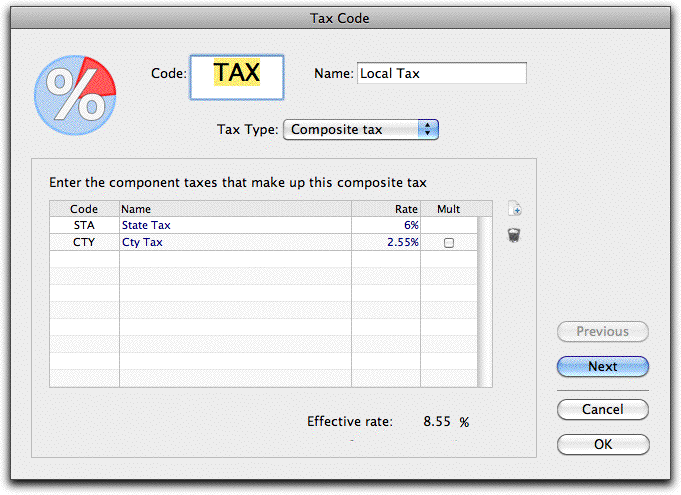
If a tax is based on a GST/VAT tax, these must be the first taxes in the calculation. For example, GST + PST is allowed, but PST + GST is not;A maximum of two GST/VAT taxes can be used in a composite tax;
Composite taxes cannot be modified once they have been used. You can change the rate of the components, but not the structure itself;
Composite taxes are calculated strictly top-down. Thus:
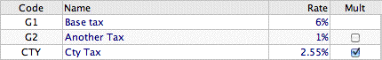
To include a tax in the calculation:
A new line will be added
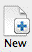
Click the New icon to add a new line
is calculated as (G1 + G2) * CTY, and not as G1 + (G2 * CTY).
Note: MoneyWorks Express and MoneyWorks Gold let you create your own forms (invoices, statements etc). Special fields are available in your invoice design to isolate the GST and PST amounts:
For the GST content on a transaction line use detail.tax1amt
For the balance of the tax content on a transaction line use detail.tax2amt
The name and rate will be displayed. Note that this must not be the code for another composite tax.
Reversed Tax
A Reversed Tax is where the purchase (or sale) of an item or service has no tax levied, but the recipient (or supplier) is required to assess and pay the tax.
Examples of this include:
Singapore: imported services subject to GST under Reverse Charge;
USA: the Use Tax, where the purchaser calculates and pays the tax;
UK: the Vat reverse charge.
When you use a reversed tax in MoneyWorks, the transaction will show with a tax rate of zero. The reverse tax amount is not stored, but needs to be calculated (normally in a report) by multiplying the net amount by the reverse tax rate. The latter can be determined using the GetTaxRate() function.
If this is not set, the taxes will be simply added, i.e. each tax is calculated on the Net amount.
When a composite tax is used in a transaction, an additional (hidden) detail line is added for each component tax used (unless the tax is a Sales Tax and has been “expensed” as part of a purchase).
There are some rules and restrictions for composite taxes:
MoneyWorks allows you to enter the details of a change to the Tax rates at any time and uses a specific change-over date to determine which rate to apply to particular transactions. Transactions dated before the changeover date will attract the Rate 1 rate, while those on or after that date will attract the Rate 2 rate.
If the tax rates change, you will need to alter the tax rate table.
The Tax Rates dialog box opens.
As the current rate is stored in the Rate 2 field, you will need to move the current rate into the Rate 1 field
Enter the date on which the rate changes into the Changeover field for the tax code
Enter the new rate into the Rate 2 field
Repeat steps 2, 3 and 4 for all of the tax codes that need to be changed. If you only have the default tax codes, you only need to change the G tax code.
For example, the GST rate in New Zealand increased from 12.5% to 15% on 1st October 2010. This would be represented in the tax table as:
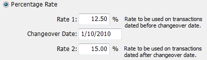
A subsequent change in the GST rate can be made by putting the current GST rate (still in the Rate 2 field after the previous change) into the Rate 1 field and adding the new change over details as before.
Note that a composite tax will respect the dates of rate changes in its components.
In MoneyWorks Gold/Datacentre, you can change an existing tax code.
Click the Change Code toolbar icon
The Change Tax Code window will open
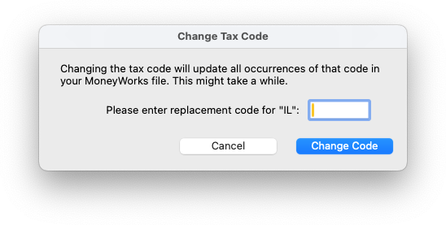
Enter the replacement code and clock Change Code
The code in the tax table will be updated, as well as all occurrences of code in the MoneyWorks file (e.g. transactions, tax overrides, accounts). This might take a while.